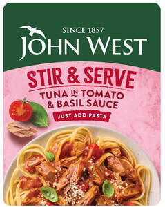

Trade Mark Journal No.2025/046 14 November 2025
UK00004290311 6 November 2025 (29,30,31)

- Class 29
- Meat, fish, shellfish, crustaceans, poultry, and game; meat or fish extracts; meat, fish, shellfish, crustaceans, poultry, and game, preserved, dried, cooked, refrigerated, or frozen; canned meat, fish, shellfish, crustaceans, poultry, and game; canned food products containing wholly or mainly meat, fish, shellfish, crustaceans, poultry, or game; vegan/vegetarian products used as substitutes for fish, meat, shellfish, crustaceans, poultry, and game; canned or refrigerated salads containing meat, fish, shellfish, crustaceans, poultry, game, cheese, or their vegan/vegetarian substitutes; preserved, dried, refrigerated, or frozen prepared meals containing wholly or mainly meat, fish, shellfish, crustaceans, poultry, game, cheese, or their vegan/vegetarian substitutes; instant meals and snacks composed wholly or mainly of meat, fish, shellfish, crustaceans, poultry, game, cheese, or their vegan/vegetarian substitutes; tofu, seitan [meat substitute], and soy; preparations based on seitan [meat substitute], tofu, or soy, such as steaks, cubes, slices, cooked or uncooked, or as prepared dishes; cooked fish in spreadable preparations, spreadable sandwich toppings, pasta, and pizza toppings composed of fish, meat, shellfish, crustaceans, poultry, game, vegetables, cheese, or their vegan/vegetarian substitutes.
- Class 30
- Preserved, dried, cooked, refrigerated, frozen, or canned food preparations primarily composed of rice, pasta, or semolina, alone or in combination with vegetables, cheese, meat, fish, shellfish, crustaceans, poultry, game, or their vegan/vegetarian substitutes; prepared meals and prepared salads primarily composed of rice, pasta, or semolina, alone or in combination with vegetables, cheese, meat, fish, shellfish, crustaceans, poultry, game, or their vegan/vegetarian substitutes; prepared sauces, including sauces based on meat, fish, shellfish, crustaceans, poultry, game, cheese, or their vegan/vegetarian substitutes; concentrated and dehydrated sauces; marinades; sauce mixes; salad dressings; seasonings and spices.
- Class 31
- Live fish, shellfish, and crustaceans; fresh fruits and vegetables.
IRISH SEAFOOD INVESTMENT Limited
Representative: Withers & Rogers LLP